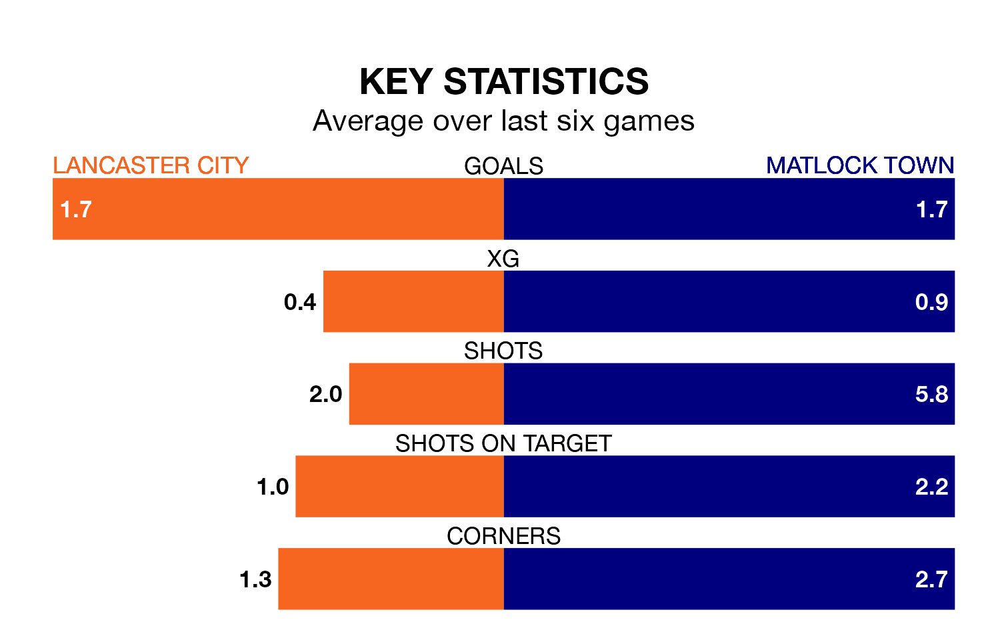

Matlock Town travel to Lancaster City on Saturday in Northern Premier League.
The visitors come into the game on the back of a win in their last match, having beaten United of Manchester 3-0 at home.
Lancaster also won their last match, 3-2 against Bradford Park Avenue.
In the last 10 years, Lancaster and Matlock have played each other on nine occasions. Lancaster won four of them and Matlock five.
On average, Lancaster scored 1.0 goal and Matlock 1.6 in those matches.
Their last meeting was on January 28 2023, when Lancaster won 2-1 at home.
With 51 goals in 26 games so far this season, Matlock are scoring more than average in the league with 2.0 goals per game. But they are conceding more than average too, letting in 47 goals at a rate of 1.8 per game.
Lancaster, meanwhile, are below average scorers, with 1.5 goals per game, compared to a league average of 1.7. They have conceded 1.4 goals per game.
City are 13th in the table after 26 games, of which they have won 11 and drawn six, earning 39 points.
Town are one place ahead of the home team in 12th, with 12 wins and four draws putting them on 40 points.
Lancaster are in mixed form in Northern Premier League, with three wins and three losses from their last six games.
With three wins and a draw over that period, the visitors' form is slightly better – they have taken 10 points from 18, compared to Lancaster's nine.
Updated: 10:03 (UTC), 30/01/24